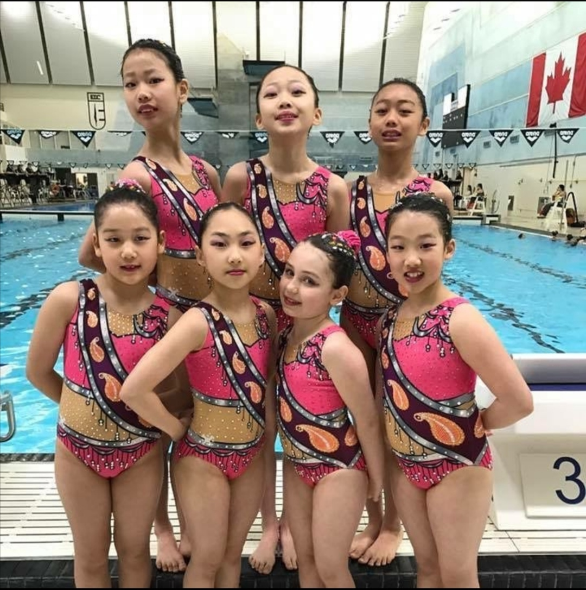

Artistic swimming is a unique sport that is essentially a combination of dance and swimming.
I first was introduced to artistic swimming through a friend at around 11 or 12. I
then joined Chaco Artistic Swimming Club for 2 years, competing on a provincial
level. We trained around 16 hours a week. In summer 2019, I had the great opportunity to attend a training camp in
Chengdu, China. After that year, I took a break for a year before
joining another team, Markham Artistic Swimming Club. As of this year, I haven't been
doing artistic swimming and I don't intend to get back into it in the forseeable
future.

In grade 7, the year I ended up not doing artistic swimming, I joined the Royal Canadian Air Cadets and their
biathlon team. Biathlon, for those who don't know, is a winter sport that involves cross-country skiing and
shooting rifles. Though I only stayed in the Air Cadets for a year, it was definitely a cool experience. The
biatholon team met up every week to train and in the winter, we drove up north to practice skiing. We also got
to train with air rifles at a facility, though at competitions we used real rifles.
We got to compete a few times throughout the year, with one of the most notable times being when we travelled
8 hours by bus to Sault St. Marie. It was a fun experience and I got to meet a lot of new people.
I think part of the reason I enjoyed this sport was because I enjoy the cold a lot; I don't tend to get cold
easily and like artistic swimming, it's an endurance sport. At the most extreme, we had to ski in negative 20-30
degree celcius weather, through strong winds and snow. This also made the shooting part harder, as it was more
difficult to see the targets. However, all that struggle made seeing the finish line every time just that much
more rewarding and I definitely don't regret the time I spent involved in this sport.